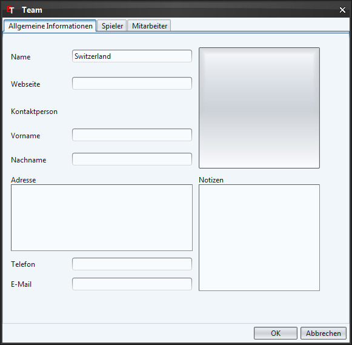
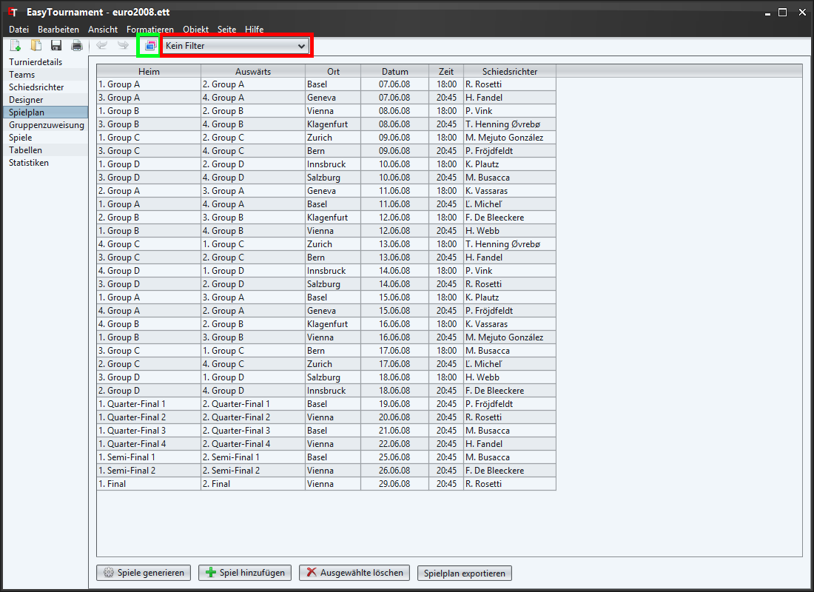
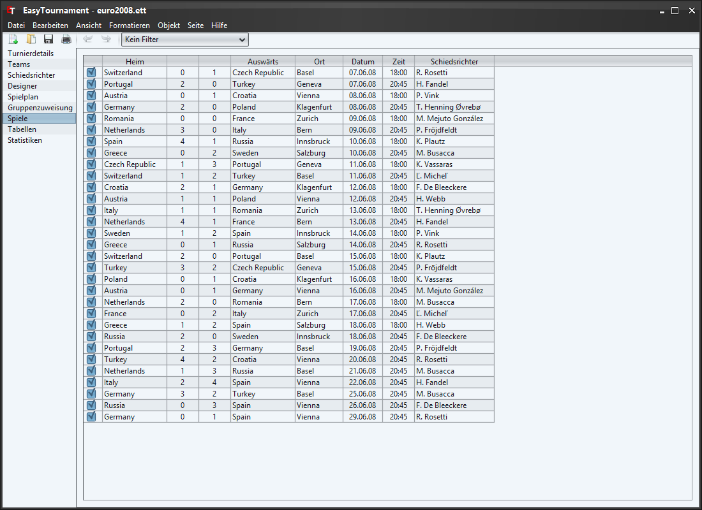

Diese kuze Anleitung zeigt Ihnen wie sie ganz einfach ein Turnier erstellen können.
Um ein neues Turnier zu erstellen, wählen sie im Menü "Datei" den Eintrag "Neues Turnier" oder klicken auf das entsprechende Bild in der Symbolleiste (siehe Bild oben: grün markiert).

Erfassen sie nun den Namen ihres Turniers und die Sportart (Nähere Informationen dazu in Turnierdetails).
Stellen sie auf dieser Seite die Anzahl Spielabschnitte (Halbzeiten, Drittel) und Verlängerungen sowie deren Dauer ein (Nähere Informationen dazu in Spieldauer und Punkte).

Auf dieser Seite können sie festlegen nach welchen Regeln die Tabellen sortiert werden sollen.
Mit den Pfeilen oder durch verschieben mit der Maus können die verfügbaren Regeln von der rechten Seite zur Linken hinzugefügt und angeordnet werden. Die oberste Regel auf der linken Seite ist diejenige, nach welcher als erstes sortiert wird.
Mit einem Doppelklick oder über das Kontextmenü (rechte Maustaste) kann eingestellt werden, ob die Regel aufsteigend oder absteigend sortiert werden soll (z.B. Punkte: der Pfeil nach unten bedeuted absteigend. Dies bedeuted, dass das Team mit den meisten Punkten zuoberst in der Tabelle ist.).
(Nähere Informationen dazu im Kapitel Regeln)

Auf dieser Seite lassen sich Teams erstellen. Dies kann einerseits duch Klicken auf die entsprechende Schaltfläche unten links oder über das Kontext-Menü (rechte Maustaste) gemacht werden.
Mit einem Doppelklick auf ein Team oder über das Kontextmenü (rechte Maustaste) lassen sich Teams bearbeiten.
(Nähere Informationen dazu im Kapitel Teams)

Erfassen sie hier den Namen des Teams.
Für ein einfaches Turnier ist das Erfassen von Spielern und Mitarbeitern nicht erforderlich und wird hier deshalb weggelassen. Falls sie diese trotzdem erfassen möchten, erhalten sie im Kapitel Teams nähere Informationen dazu.
Für ein einfaches Turnier ist das Erfassen von Schiedsrichtern nicht erforderlich und wird hier deshalb weggelassen. Falls sie trotzdem Schiedsrichter erfassen möchten, erhalten sie im Kapitel Schiedsrichter nähere Informationen dazu.

Der Designer ist das Herzstück der Applikation. Hier wird der Turnierablauf festgelegt.
Die verfügbaren Gruppenelemente sind in der grünen Box links sichtbar und können mit der Maus auf die Designer-Seite gezogen werden. Bereits eingefügte Gruppen können wie in jedem anderen Grafikprogramm kopiert und mit der Delete-Taste gelöscht werden.
Mit einem Doppelklick auf eine Gruppe oder über das Kontextmenü (rechte Maustaste) kann diese angepasst werden.

Legen sie hier jeweils den Namen und die Anzahl Teams der Gruppe fest. "Spieldauer und Punkte" sowie "Regeln" überspringen wir in diesem einfachen Beispiel. Mehr dazu erfahren sie im Kapitel Gruppe.
Die Pfeile zeigen an, in welche Gruppe ein Team kommt, falls es eine bestimmte Position erreicht hat. Im Bild oben, erreicht z.B. der 1. plazierte der Gruppe A das "Quater-Final 1" und der Gewinner dieses Viertelfinals des Halbfinale "Semi-Final 1".
Pfeile erstellen sie ganz einfach indem sie auf die Startposition klicken und die linke Maustaste gedrückt halten, so auf die Zielposition fahren und dort die Maustaste wieder loslassen.
Bei Duell Gruppen sind Pfeile von der linken Position die des Gewinners und von der Rechten die des Verlierers dieses Duells.
Ein Team kann in mehrere Gruppen kommen, jede Position hat aber maximal einen eingehenden Pfeil. Logischerweise sind keine Kreise erlaubt.
(Nähere Informationen dazu in Kapitel Designer)

Über die Schaltfläche "Spiel hinzufügen" oder über das Kontextmenü (rechte Maustaste) kann ein neues Spiel hinzugefügt werden.
Klicken sie nun in die Zelle der Heim-Position und wählen Sie die Position der Gruppe die bei diesem Spiel Zuhause antreten wird. Als nächstes wählen sie in der Auswärts-Zelle die Auswärts-Position. Optional können nun noch die weiteren Felder der Zeile ausgefüllt werden.
Die Tabelle wird nach dem Datum und der Zeit sortiert.
(Nähere Informationen dazu im Kapitel Spielplan)
Auf dieser Seite werden die bei "Teams" erfassten Mannschaften den Gruppen zugewiesen. Auf der linken Seite sehen sie diejenigen Teams, welche noch keiner Gruppe zugewiesen wurden (In diesem Beispiel ist es Switzerland und Austria). Rechts sind alle Gruppen aufgelistet, welche Startplätze zur Verfügung haben (Positionen ohne eingehenden Pfeil).
Die Teams können sie ganz eifach per Drag & Drop verschieben (Mit der linken Maustaste auf ein Team klicken, die Taste gedrückt halten und an die gewünschte Stelle verschieben und dort loslassen.
(Nähere Informationen dazu im Kapitel Gruppenzuweisung)

Diese Tabelle entspricht derjenigen der auf der Seite "Spielplan" abgesehen davon, dass hier die Team-Namen anstelle der Positionen stehen und 2 Resultatspalten hinzugekommen sind.
Die Tabelle wird nach dem Datum und der Zeit sortiert.
Es gibt 3 verschiedene Varianten ein Resultat zu erfassen. In dieser Kurzanleitung wird nur die einfachste erklärt.
Um ein Resultat zu erfassen klicken sie eifach in die jeweilige Resultat-Zelle und geben die Zahl ein.
(Nähere Informationen dazu im Kapitel Spiele)

Wie es der Name bereits sagt, sind auf dieser Seite die aktuellen Tabellen zu sehen, welche nach den von ihnen definierten Regeln sortiert werden.
(Nähere Informationen dazu im Kapital Tabellen)
Weil wir nur die einfachste Möglichkeit zum Erfassen von Resultaten gewählt haben, lässt sich nur die Statistik "Tore inkl. Penaltyschiessen" gruppiert nach Teams auswerten.
(Nähere Informationen dazu im Kapitel Statistiken)